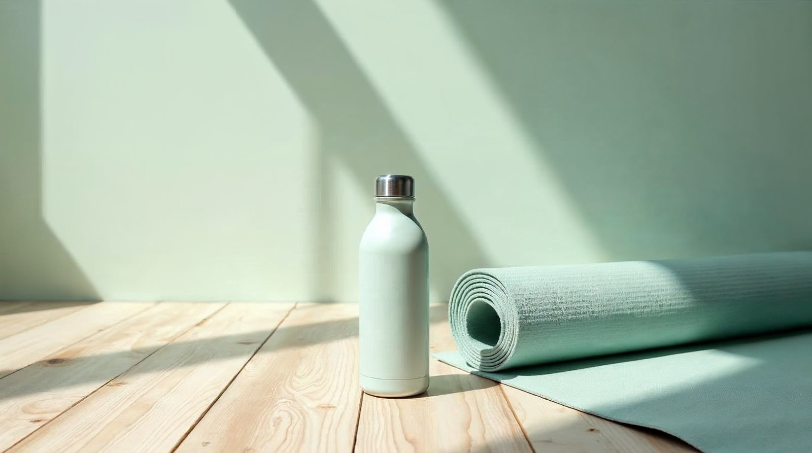
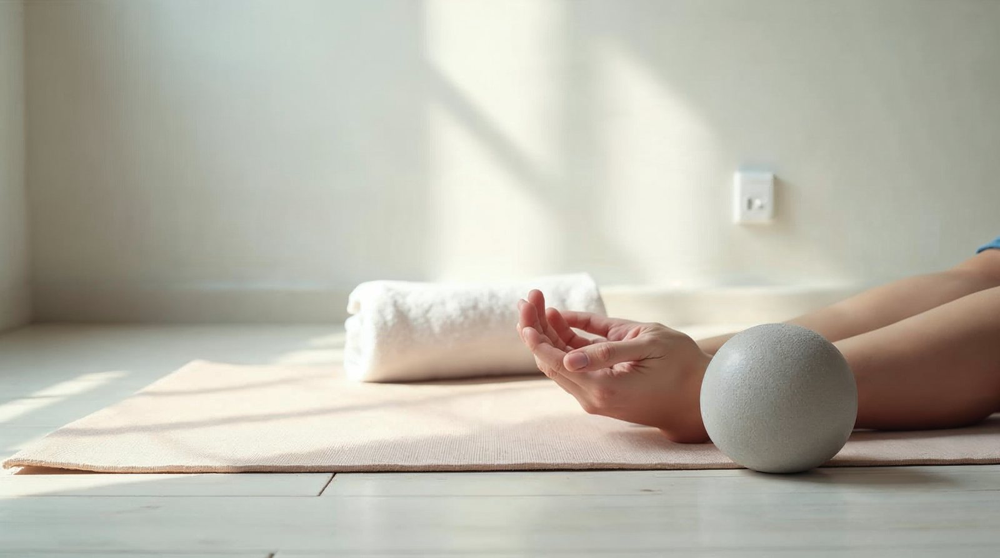
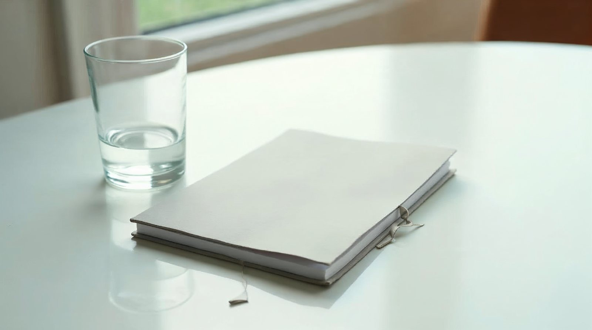
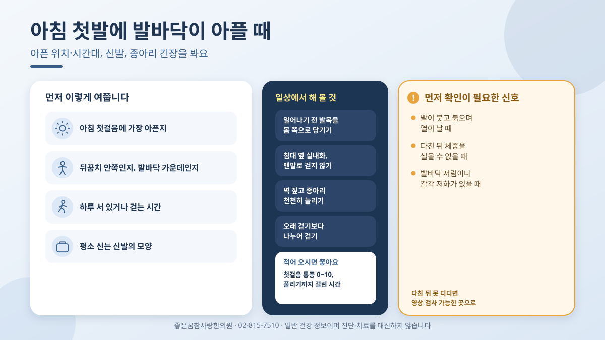

이종호 한의사 감수좋은꿈참사랑한의원 대표원장 (한의사 면허번호 19769)발행 2026-11-26 · 수정 2026-11-27
이 글의 차례
알람을 끄고 침대에서 일어나 바닥에 첫발을 딛는 순간, 발뒤꿈치를 바늘로 찌르는 듯한 통증이 올라와요. 저도 모르게 발끝으로 서서 화장실까지 절뚝이며 걸어가죠. 그런데 출근 준비를 하는 사이 몇 걸음 걷고 나면 이상하게 견딜 만해집니다.
그래서 더 헷갈리세요. 하루 종일 아픈 것도 아니니 병원에 갈 일인가 싶고, 그렇다고 매일 아침 첫걸음이 겁나는 것도 지치는 일이잖아요. 오래 앉아 있다 일어설 때 그 통증이 한 번 더 찾아오면 마음까지 내려앉고요.
진료실에서 이런 말씀을 자주 들어요. "걷다 보면 괜찮아져서 그냥 참았어요." 그렇게 참으며 지낸 몇 주가 얼마나 불편하셨을까 싶어요. 그런데 걷다 보면 덜해지는 건 원래 이 통증의 모습이에요. 밤새 쉬며 짧아져 있던 발바닥과 종아리가 몇 걸음 사이에 조금씩 늘어나니까요.
그러니 두 가지를 나눠서 보셔야 해요. '걷다 보니 덜해진 것'과 '괜찮아진 것'은 다른 얘기거든요. 아침마다 같은 통증이 되풀이된다면, 발은 아직 쉬고 싶다고 말하고 있는 거예요.
답부터 드릴게요. 아침 첫발에 발뒤꿈치가 찌르듯 아프다가 조금 걸으면 덜해진다면, 발바닥 근막과 종아리가 당겨 있는 경우를 먼저 생각해 볼 수 있어요. 진료실에서는 아픈 위치와 시간대, 신발, 서 있는 시간, 종아리 긴장을 함께 여쭙습니다.
아픈 한 점만 보지 않고 발바닥과 종아리까지 넓게 살핀 뒤, 필요하다고 판단되면 초음파로 발바닥 근막 주변을 확인하고, 침·약침·체외충격파 가운데 오늘 상태에 맞는 방법을 정해요.
왜 아침 첫걸음이 유독 아플까요
자는 동안 발바닥 근막과 종아리는 짧아진 채로 쉬고 있습니다. 그러다 아침에 체중을 싣는 순간 갑자기 늘어나면서 아플 수 있다고 알려져 있습니다. 오래 앉아 있다 일어설 때 비슷한 통증이 오는 것도 같은 이유로 설명합니다.
몇 걸음 걸으면 덜해지는 것은 굳어 있던 조직이 조금씩 풀리기 때문입니다. 그렇다고 괜찮다는 뜻은 아닙니다. 근막은 힘줄처럼 한번 지치면 잘 회복되지 않는 조직이라, 같은 부담이 이어지면 아침 통증이 몇 주씩 되풀이되기 쉽습니다.
부담이 늘어나는 계기는 대개 생활 속에 있습니다. 서 있거나 걷는 시간이 갑자기 늘어난 시기, 딱딱한 바닥이나 쿠션이 없는 신발, 늘어난 체중이 발뒤꿈치가 지는 짐을 키웁니다.
종아리도 함께 봐야 합니다. 종아리가 굳으면 발바닥이 당겨지고, 아픈 발을 아끼려고 디딜 때마다 종아리에 또 힘이 들어갑니다. 그래서 저는 발바닥만이 아니라 종아리와 허벅지, 반대쪽 다리까지 차례로 살핍니다.
- 밤새 짧아져 있던 발바닥 근막과 종아리
- 갑자기 늘어난 서 있는 시간이나 걷는 거리
- 딱딱한 바닥, 닳은 신발, 늘어난 체중
아픈 자리와 아픈 때가 알려 주는 것
발바닥이 아프다고 해서 모두 같은 이야기는 아닙니다. 저는 먼저 아픈 곳을 손가락 하나로 짚어 보실 수 있는지 여쭙습니다. 부위가 좁고 분명할수록 손으로 누르고 초음파로 확인할 지점을 정하기가 쉽습니다.
뒤꿈치 안쪽이 콕 찌르듯 아픈지, 발바닥 한가운데가 넓게 뻐근한지에 따라 살필 곳이 달라집니다. 뒤꿈치 뒤쪽이 신발 뒤축에 닿아 아프다면 그쪽 힘줄을 따로 봅니다.
아픈 때도 단서입니다. 아침 첫걸음과 오래 앉았다 일어설 때 아프고 걸으면 풀리는 모습은 앞의 이야기와 잘 맞습니다. 반대로 쉬어도 밤새 욱신거리거나 발이 붓고 뜨겁다면, 다른 원인이 없는지 먼저 확인해야 합니다.
발바닥이 아프기보다 저리고 화끈거리거나 감각이 둔하다면 또 다르게 봅니다. 허리에서 시작된 불편이 다리로 내려와 저림으로 느껴지는 경우도 있어, 허리와 다리의 근력과 감각을 함께 확인합니다. 당뇨가 있는 분이라면 더 꼼꼼히 봅니다.
걷는 것이 즐거움인 분께 걷지 말라고만 하지 않습니다
걷기를 좋아하는 분일수록 발바닥 통증이 자꾸 되풀이된다며 걱정하십니다. 발바닥 통증은 다시 생기기 쉽습니다. 원칙대로라면 한동안 걷기를 줄이고 쉬면서 치료하는 것이 맞고, 심하면 고정하기도 합니다.
그런데 걷는 것이 삶의 즐거움인 분께 걷지 말라고만 하면 그 말씀을 지키기 어렵습니다. 그래서 저는 하고 싶은 일이 무엇인지 먼저 듣고, 어느 만큼까지 걸어도 되는지를 함께 정하려고 합니다. 걸은 뒤에 들러 치료를 받으시게 하고, 아픔이 어떻게 달라지는지 이어서 봅니다.
기준은 단순합니다. 아프면 줄이고, 첫걸음 통증이 심해지거나 붓고 디디기 어려우면 쉬고 확인합니다. 한 번에 멀리 걷는 것보다 짧게 나누어 자주 걷는 편이 발바닥의 부담이 덜합니다.
제가 자주 나누어 말씀드리는 것이 있습니다. 출퇴근이나 장보기 같은 일상 걷기와, 운동 삼아 따로 하는 걷기입니다. 아픈 동안 일상 걷기는 그대로 두고 운동 삼아 걷는 양만 잠시 줄여 보세요. 발이 붓는 날이라면 더욱 그렇습니다.
의욕이 앞설 때일수록 한 걸음 덜 가 보세요. 조금 덜 아프다고 욕심을 내서 오래 걸으면 다시 아파 며칠을 쉬어야 할 때가 있습니다. 오늘 한 번에 해내려 하지 말고 작게 많이 하시는 편이 오래갑니다.
이런 분들을 진료실에서 자주 뵙습니다
특정한 누구의 이야기가 아니라, 아침 첫걸음이 아파 오시는 분들에게서 자주 겹쳐 보이는 모습입니다.
예를 들어 매장에서 하루 종일 서서 일하는 분이라면, 퇴근 무렵 발바닥이 화끈하고 다음 날 아침 첫걸음이 더 아프다고 하십니다. 쉬는 시간마다 앉아서 발목을 돌리고, 서 있는 동안 틈틈이 발뒤꿈치를 들었다 내리는 순서를 함께 정합니다.
예를 들어 건강을 챙기려고 걷기 운동을 새로 시작하며 거리를 갑자기 늘린 분도 많습니다. 이때는 거리를 평소의 70% 정도로 줄였다가, 다음 날 아침 첫걸음이 어떤지 보고 조금씩 늘리는 계획부터 이야기합니다.
예를 들어 집에서 맨발로 딱딱한 바닥을 오래 걷는 어르신이라면, 실내화를 신는 것과 아침 스트레칭부터 시작합니다. 첫발이 아픈 새벽에 화장실에 가실 때가 가장 조심스러워서, 가는 길에 작은 등을 켜 두고 침대 가장자리에 잠시 앉았다가 일어나시라고 말씀드립니다.

체외충격파는 이렇게 정합니다
체외충격파는 피부를 절개하지 않고, 장비의 끝을 아픈 부위에 대고 짧은 충격파를 반복해서 전달하는 방법입니다. 저희는 제우스와 한일티엠 두 종류의 장비를 갖추고 부위와 상태에 맞게 고릅니다. 받는 동안 두드리는 느낌이나 시큰한 느낌이 들 수 있습니다.
받기 전에는 임신 가능성이 있는지, 혈액 응고에 문제가 있거나 혈액을 묽게 하는 약을 드시는지, 심장박동기 같은 전자 의료기기나 금속 삽입물이 있는지 먼저 여쭙니다.
치료할 부위에 상처나 감염, 종양이 있거나, 성장판이 아직 열려 있는 아이·청소년이라면 그것도 먼저 알려 주세요. 최근 같은 부위에 주사 치료를 받으셨을 때도 마찬가지입니다. 이런 경우는 하지 않거나 더 신중히 정합니다.
받는 중에 아픈 곳이 더 뚜렷하게 느껴지기도 하는데, 그 반응은 위치와 강도를 맞추는 참고가 됩니다. 그래서 낮은 강도로 짧게 시작해 반응을 보며 조절합니다. 아프게 받아야 한다는 생각은 내려놓으셔도 됩니다.
받은 뒤 하루 이틀 시큰함이 남을 수 있어 다음에 오시면 그 변화부터 여쭙습니다. 기록에는 받은 부위와 강도, 받은 뒤 느낌을 남겨 두고, 몇 번 받았는지보다 아침 첫걸음과 일상 동작이 어떻게 달라졌는지를 함께 봅니다.
받은 부위는 세게 주무르기보다 가볍게 쉬어 주세요. 평소와 다른 붓기나 멍이 오래가면 다음 진료를 기다리지 말고 바로 연락 주시면 됩니다.
먼저 이렇게 여쭙니다
- 아침 첫걸음과 오래 앉았다 일어설 때 중 언제 아픈지
- 아픈 곳이 뒤꿈치 안쪽인지, 발바닥 가운데인지
- 하루 서 있거나 걷는 시간, 최근 늘었는지
- 평소 신는 신발과 집 안 바닥
- 당뇨가 있는지, 저림이나 감각 둔함이 있는지
- 발이 편해지면 다시 하고 싶은 일
마지막 질문을 의아해하시는 분도 계십니다. 장보기든 산책이든 복지관 나들이든, 다시 하고 싶은 일이 있으면 오늘 몇 걸음을 걸을지 정하기가 쉬워집니다.
스스로 점검해 보세요
- 아침 첫걸음에 발뒤꿈치가 찌르듯 아프다
- 오래 앉았다 일어설 때도 비슷하게 아프다
- 조금 걸으면 덜해지지만 오래 서 있으면 다시 아프다
- 아픈 곳을 손가락 하나로 짚을 수 있다
- 최근 서 있거나 걷는 시간이 갑자기 늘었다
- 종아리가 자주 당기거나 뭉친다
- 이런 아침 통증이 2주 넘게 되풀이된다
해당하는 것이 많다면 발바닥과 종아리 긴장, 신발과 서 있는 시간을 함께 살펴보면 좋습니다. 저림이나 감각 둔함이 있다면 개수와 상관없이 진료 때 꼭 말씀해 주세요.

일상에서 먼저 해 볼 수 있는 것
- 일어나기 전, 누운 채 발목을 몸 쪽으로 당기기
- 침대 옆에 실내화 두고 맨발로 딱딱한 바닥 걷지 않기
- 앉아서 골프공을 발바닥 아래 두고 1~2분 굴리기
- 오일을 조금 발라 종아리를 아래에서 위로 쓸어 올리기
- 벽을 짚고 아프지 않은 범위에서 종아리 늘리기
- 한꺼번에 오래 걷기보다 나누어 걷기
신발은 쿠션이 있는 것이 도움이 될 수 있지만, 너무 물렁하거나 밑창이 닳은 신발은 오히려 발을 불안정하게 만듭니다. 뒤꿈치가 없는 슬리퍼도 당분간은 피하시는 편이 좋습니다.
발바닥과 종아리를 풀 때 기준은 하나입니다. 시원하면 이어 가고, 쥐가 나거나 불편이 늘면 그날은 멈춥니다. 아침저녁 한 번씩, 한 번에 몇 분이면 충분합니다. 통증을 참으며 하는 스트레칭이나 운동은 권하지 않습니다.
밤에 종아리에 쥐가 자주 나는 분이라면 잠들기 전 종아리와 발목을 천천히 늘려 주고, 발이 차지 않게 양말을 신고 주무셔 보세요. 물을 하루 동안 나누어 드시는 것도 도움이 될 수 있습니다.
당뇨가 있거나 발의 감각이 둔한 분은 피부가 다쳐도 모를 수 있습니다. 공으로 세게 누르지 말고, 마사지 뒤에는 발바닥 피부를 꼭 살펴보세요.
이런 발은 뜨거움도 덜 느껴 핫팩이나 찜질팩에 화상을 입기 쉬우니 발에 대지 않는 편이 안전합니다. 따뜻한 물에 발을 담그실 때도 물 온도를 손이나 팔꿈치로 먼저 확인하세요. 감각이 괜찮은 분도 찜질은 수건을 사이에 두고 짧게 하시고, 올려 둔 채 잠들지 마세요.
걸음도 한번 살펴보세요. 마음은 예전 걸음 그대로인데 발은 지금의 발입니다. 발바닥이 아플 때는 보폭을 조금 줄여 앞발 근처까지만 내딛는 종종걸음이 발뒤꿈치가 받는 부담을 덜어 줄 수 있습니다.
한의원에서 함께 살필 수 있는 경우
- 아침 첫걸음 통증이 몇 주째 되풀이되는 경우
- 종아리가 늘 뻣뻣해 걸음이 짧아진 경우
- 아픈 발을 아끼느라 무릎이나 허리까지 뻐근한 경우
- 오래 서 있은 날 발이 붓고 무거운 경우
처음 오시면 양손을 내어 달라고 말씀드리고, 모든 분의 맥을 먼저 짚은 뒤 아픈 위치와 시간대, 신발과 서 있는 시간을 듣습니다. 맥을 짚으며 잠과 소화, 몸이 찬지와 붓는지를 함께 여쭙습니다. 몸 전체가 얼마나 지쳐 있는지 알아야 걷는 양도 정하기 쉽습니다.
한의학에서는 아픈 자리와 함께 몸의 상태도 봅니다. 몸이 차거나 저녁마다 다리가 붓고 근육이 자주 뭉치는 상태라면, 같은 자극에도 더 아프게 느끼는 경우가 있어서입니다.
그다음 걷는 모습을 보고, 뒤꿈치 안쪽과 발바닥 가운데, 종아리를 눌러 보며 아픈 범위를 확인합니다. 필요하다고 판단되면 초음파로 발바닥 근막 주변을 살피고, 아프지 않은 쪽 발과 비교해 보기도 합니다.
초음파를 볼 때는 화면을 환자분 쪽으로 돌려 함께 보시도록 합니다. 어디가 불편한지 눈으로 보시면 집에서 조심할 것도 더 잘 기억하십니다. 다음 진료에서 같은 자리를 다시 볼 수도 있습니다.
이렇게 살핀 뒤 주요 치료 부위를 정해 기록하고, 침과 약침, 체외충격파 가운데 오늘 상태에 맞는 방법을 정합니다. 귀가 전에는 아침 스트레칭 순서와 오늘 걸어도 되는 양을 함께 정해 드립니다.
치료를 받고 나서 이틀씩 더 아프다면 꼭 말씀해 주세요. 참고 다니시다 아예 발길을 끊는 분도 있는데, 그러실 필요가 없습니다. 반응이 큰 부위는 방법을 바꾸거나 그 부위를 쉬어 가면 됩니다.
얼마나 지켜보고, 언제 상담하면 좋을까요
스트레칭과 신발 바꾸기는 적어도 2~3주는 이어 가며 아침 첫걸음 점수를 적어 비교해 보세요. 하루 이틀로는 변화가 잘 보이지 않습니다.
3~4주가 지나도 아침 통증이 그대로이거나, 아파서 걷는 거리가 줄었다면 상담을 받아 보시길 권합니다. 일상이 불편하다면 그보다 일찍 오셔도 괜찮습니다.

이렇게 기록해 오시면 상담이 쉬워집니다
- 아침 첫걸음 통증(0~10)과 풀리기까지 걸린 시간
- 그날 서 있거나 걸은 시간과 신은 신발
- 걷는 양을 늘린 날과 다음 날 아침 첫걸음
- 당뇨 여부와 복용 중인 약, 특히 혈액을 묽게 하는 약
이런 증상은 먼저 확인이 필요합니다
- 발이 붓고 붉으며 뜨겁거나 열이 나는 경우
- 다치거나 삐끗한 뒤 체중을 실을 수 없는 경우
이런 신호가 있으면 한의원보다 가까운 병원이나 응급실을 먼저 찾으세요.
마치며
매일 아침 첫걸음이 아프면 하루를 시작하기도 전에 마음이 먼저 움츠러들어요. 그래도 그 발로 오늘도 출근하고, 장을 보고, 가족을 챙기셨을 거예요. 그동안 애쓴 발을 조금 아껴 주셨으면 해요.
저는 걷는 걸 좋아하는 분께 걷지 말라고 하지 않아요. 걷지 말라는 게 아니라, 발이 견딜 만큼만 걷자는 거예요. 걸어도 되는 만큼을 정하고 발바닥과 종아리를 살피는 건 진료실에서 제가 하겠습니다.
그 대신 아침에 하나만 챙겨 주세요. 침대에서 내려오기 전에, 누운 채로 발목을 몸 쪽으로 몇 번 당겼다 풀어 주시는 거예요. 실내화나 신발 같은 건 그다음 차례로 미뤄 두셔도 괜찮아요.
이건 세게 할 필요가 없어요. 약하게, 대신 매일 아침 빠뜨리지 않는 게 중요하거든요. 작아 보여도 아침 첫걸음을 조금 덜 두렵게 해 줄 수 있어요. 바쁜 아침에 깜빡하는 날도 있을 거예요. 그게 정상이에요. 다음 날 아침 다시 하시면 됩니다.
걷는 즐거움을 내려놓지 않고 오래 이어 가실 수 있도록 함께 보겠습니다. 진료실에서 다시 뵈면 오늘 아침 첫발이 어땠는지, 몇 걸음 만에 풀렸는지 들려주세요. 묻고 싶은 게 있으면 언제든 꺼내 놓으세요.
함께 읽으면 좋은 글

여쭙는 것
- 아침 첫걸음과 오래 앉았다 일어설 때 중 언제 아픈지
- 아픈 곳이 뒤꿈치 안쪽인지, 발바닥 가운데인지
- 하루 서 있거나 걷는 시간, 최근 늘었는지
생활에서 해 볼 것
- 일어나기 전, 누운 채 발목을 몸 쪽으로 당기기
- 침대 옆에 실내화 두고 맨발로 딱딱한 바닥 걷지 않기
- 앉아서 골프공을 발바닥 아래 두고 1~2분 굴리기
한의원에서 함께 살필 것
- 아침 첫걸음 통증이 몇 주째 되풀이되는 경우
- 종아리가 늘 뻣뻣해 걸음이 짧아진 경우
- 아픈 발을 아끼느라 무릎이나 허리까지 뻐근한 경우
먼저 확인이 필요한 신호
- 발이 붓고 붉으며 뜨겁거나 열이 나는 경우
- 다치거나 삐끗한 뒤 체중을 실을 수 없는 경우
한눈에 보는 표
| 구분 | 핵심 |
|---|---|
| 여쭙는 것 | 아침 첫걸음과 오래 앉았다 일어설 때 중 언제 아픈지 아픈 곳이 뒤꿈치 안쪽인지, 발바닥 가운데인지 |
| 생활에서 해 볼 것 | 일어나기 전, 누운 채 발목을 몸 쪽으로 당기기 침대 옆에 실내화 두고 맨발로 딱딱한 바닥 걷지 않기 |
| 한의원에서 함께 살필 것 | 아침 첫걸음 통증이 몇 주째 되풀이되는 경우 종아리가 늘 뻣뻣해 걸음이 짧아진 경우 |
| 먼저 확인이 필요한 신호 | 발이 붓고 붉으며 뜨겁거나 열이 나는 경우 다치거나 삐끗한 뒤 체중을 실을 수 없는 경우 |
자주 묻는 질문
아침 첫걸음 통증은 한의원에서 어떻게 살피나요?
모든 분께 맥을 먼저 짚고, 아픈 위치와 시간대, 신발과 서 있는 시간을 여쭌 뒤 발바닥과 종아리까지 눌러 보며 범위를 살핍니다. 필요하다고 판단될 때 초음파로 발바닥 근막 주변을 확인합니다.
체외충격파를 받을 수 있나요?
필요하다고 판단될 때 체외충격파를 이어서 쓸 수 있습니다. 임신 중이거나 혈액을 묽게 하는 약을 드시는 경우, 치료 부위에 감염이나 종양이 있는 경우, 성장판이 열려 있는 아이라면 먼저 알려 주세요. 횟수는 진찰 후 안내하고, 비용은 방문 전 전화로 확인해 주세요.
체외충격파를 받은 날 걸어도 되나요?
평소 걷기는 괜찮지만 그날은 오래 서 있거나 무리한 운동은 피하시길 권합니다. 통증이 오히려 심해지면 바로 알려 주세요.
깔창을 써야 하나요?
발 모양과 걷는 방식에 따라 다릅니다. 진찰 후 필요하다고 판단되면 안내합니다.
걷기를 좋아하는데 완전히 끊어야 하나요?
완전히 끊기보다 걷는 양을 줄여 나누어 걷는 쪽을 함께 정합니다. 첫걸음 통증이 심해지거나 붓고 디디기 어려우면 그때는 쉬고 확인합니다.
좋은꿈참사랑한의원은 재진 때 지난번 이야기부터 이어서 여쭙니다. 진료시간과 예약은 오시는 길에서 확인하세요.
어디서 상담받을 수 있나요?
좋은꿈참사랑한의원은 서울 동작구 만양로2길 2 신성빌딩 3층·5층(서울 동작구 상도동, 7호선 상도역 3번 출구 근처)에 있습니다. 한의사 3명(이종호 대표원장, 조영기 수석진료원장, 정원영 진료원장)이 진료합니다. 진료시간은 평일 09:30~20:00(점심 13:00~14:00), 토·일·공휴일 09:30~15:00이며, 방문 전 전화로 확인을 권합니다. 예약은 네이버 예약, 카카오톡 상담, 전화 02-815-7510로 받습니다.
이 글은 일반적인 건강 정보이며 개인의 진단이나 치료를 대신하지 않습니다. 증상이 있거나 복용 중인 약이 있다면 진료를 통해 확인하세요. 치료 효과는 개인마다 다를 수 있습니다.
작성 기준: 일반적으로 알려져 있는 건강 정보를 참고해 정리했습니다(대표원장 감수). 증상 기록은 1~2주 동안 하루 1회, 비슷한 시간에 적어 오시면 지난 상태와 비교하기 쉽습니다.